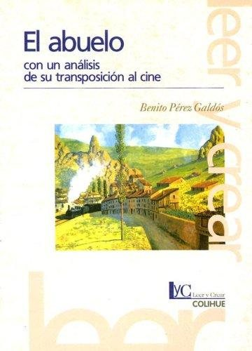
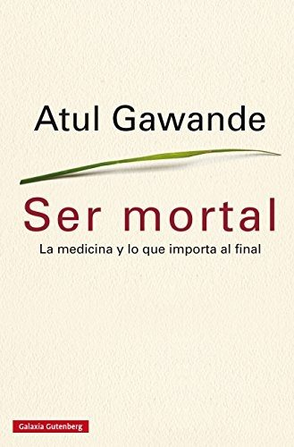

Libros de envejecimiento y vejez
Libros de envejecimiento y vejez en español: 12 libros completos para leer gratis aquí mismo y 3 fichas de títulos actuales.
Evaluación en demencias: recurso general para alumnos Máster Intervención personas con alzheimer. Material docente [Recurso Educativo]Buch Vicente, Bárbara
Evaluación en demencias: recurso general para alumnos Máster Intervención personas con alzheimer. Material docente [Recurso Educativo]Buch Vicente, BárbaraGuia intervenciones eficaces en personas con demencia moderada a grave que viven en residenciasPinazo Hernandis, Sacramento; Balaguer Mengual, Claudia
Guia intervenciones eficaces en personas con demencia moderada a grave que viven en residenciasPinazo Hernandis, Sacramento; Balaguer Mengual, ClaudiaLa demencia en América Latina y el Caribe: prevalencia, incidencia, repercusiones y tendencias a lo largo del tiempo
La demencia en América Latina y el Caribe: prevalencia, incidencia, repercusiones y tendencias a lo largo del tiempoProyecto I: una nueva agenda sobre la vejez y el envejecimiento activo. Una mirada multidimensional. Intervenciones desde el campo de la educaciónKlin, Patricia
Proyecto I: una nueva agenda sobre la vejez y el envejecimiento activo. Una mirada multidimensional. Intervenciones desde el campo de la educaciónKlin, PatriciaManual para el entrenamiento y apoyo de cuidadores de personas con demencia (iSupport)Organización Mundial de la Salud
Manual para el entrenamiento y apoyo de cuidadores de personas con demencia (iSupport)Organización Mundial de la SaludEnvejecimiento, actividad física y desarrollo emocionalOlga Bruna, Isabel Carrera Blancafort, Mercè Gimeno-Santos y otros
Envejecimiento, actividad física y desarrollo emocionalOlga Bruna, Isabel Carrera Blancafort, Mercè Gimeno-Santos y otrosManual del cuidador familiar. (Es)tar con la demencia: Programa de capacitación para cuidadores familiares de personas con demencia que residen en el domicilioLia Sousa; Carlos Sequeira; Carme Ferré Grau
Manual del cuidador familiar. (Es)tar con la demencia: Programa de capacitación para cuidadores familiares de personas con demencia que residen en el domicilioLia Sousa; Carlos Sequeira; Carme Ferré GrauGuía de orientación para la intervención de musicoterapia en personas con demenciaGarcía Valverde, Esther
Guía de orientación para la intervención de musicoterapia en personas con demenciaGarcía Valverde, EstherPrograma de actuación cognitiva integral en demencias (PACID)García Meilán, Juan José; Carro Ramos, Juan Avelino
Programa de actuación cognitiva integral en demencias (PACID)García Meilán, Juan José; Carro Ramos, Juan AvelinoEl abueloBenito Pérez Galdós
El abueloBenito Pérez Galdós
Envejecimiento y demencias, febrero 2021Matias-Guiu, Jordi A.; Gelonch Rosinach, Olga; Calabria, Marco
Envejecimiento y demencias, febrero 2021Matias-Guiu, Jordi A.; Gelonch Rosinach, Olga; Calabria, MarcoLos Oficios de Ciceron, con los dialogos de la Vejez, de la Amistad, las Paradoxas, y el Sueno de Escipion:Cicero, Marcus Tullius
Los Oficios de Ciceron, con los dialogos de la Vejez, de la Amistad, las Paradoxas, y el Sueno de Escipion:Cicero, Marcus TulliusEl amor en los tiempos del cóleraGabriel García Márquez
El amor en los tiempos del cóleraGabriel García MárquezSer mortalAtul Gawande
Ser mortalAtul Gawande
La vejezSimone de Beauvoir
La vejezSimone de BeauvoirTemas relacionados
¿Estás eligiendo carrera?
Haz gratis el test de orientación vocacional de AURZANE: intereses, aptitudes, autoconcepto y hábitos de estudio, con informe completo.